Người dùng đã chốt persona sinh viên CNTT và cho phép triển khai Phase 4. Chưa có bằng chứng cô đã duyệt tên đề tài/rubric. Tích hợp dịch vụ thật và benchmark chưa được xác nhận. Xem biên bản từng phase để phân biệt thiết kế và kết quả code/test.
Context và actor ngoài hệ thống
Ranh giới hệ thống, sinh viên và các dịch vụ bên ngoài.
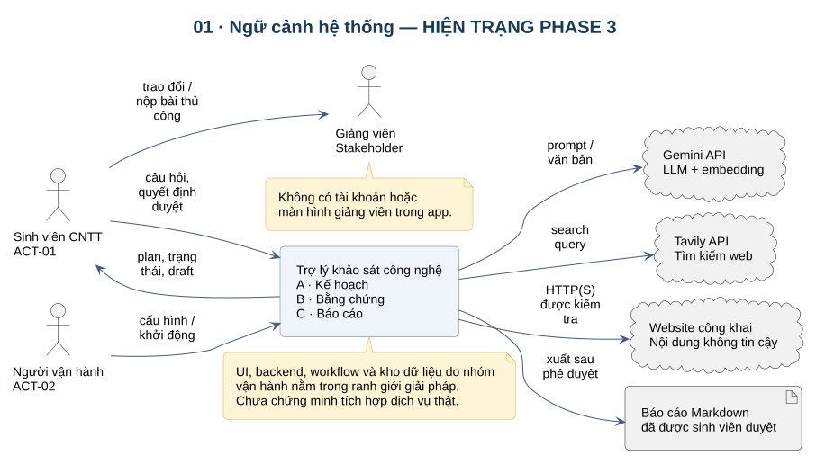


UML use case A/B/C
Tạo kế hoạch, thu thập bằng chứng, duyệt và xuất báo cáo.
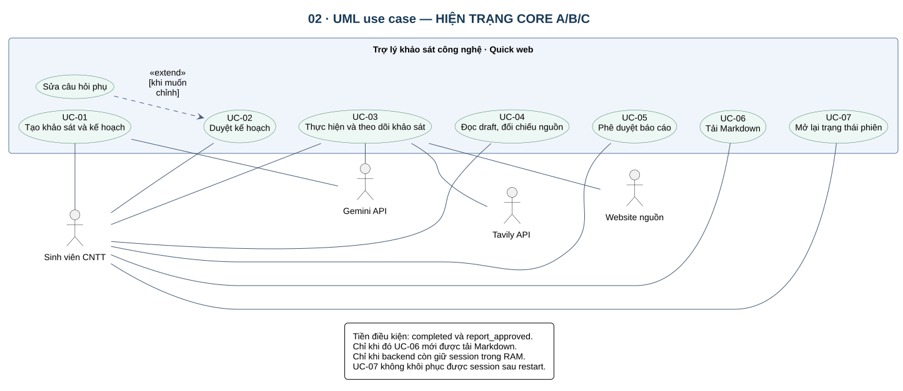


Activity với swimlane
Luồng công việc và trách nhiệm của người dùng, UI, backend.
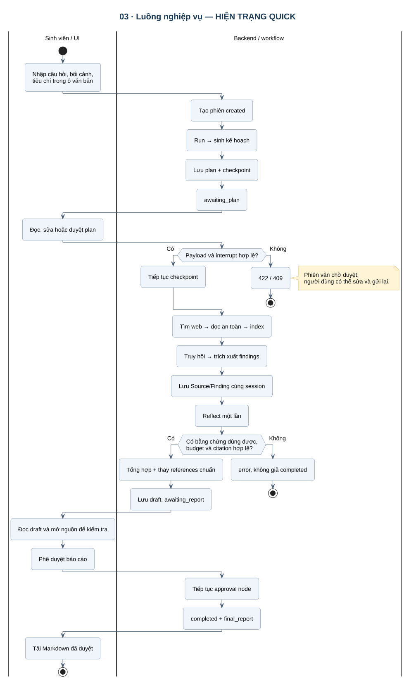


Sequence tạo và duyệt kế hoạch
Checkpoint kế hoạch trước khi yêu cầu người dùng duyệt.
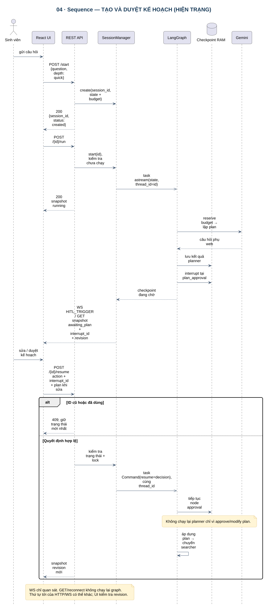


Sequence nghiên cứu và dữ liệu
Web search, đọc nguồn, embedding, extraction và graph.
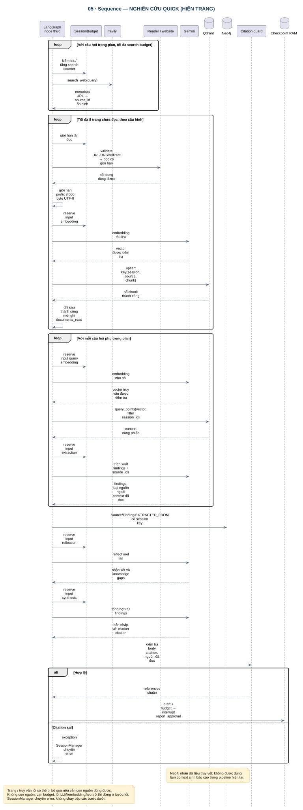


Sequence duyệt và xuất báo cáo
Bản nháp, phê duyệt và tải Markdown.
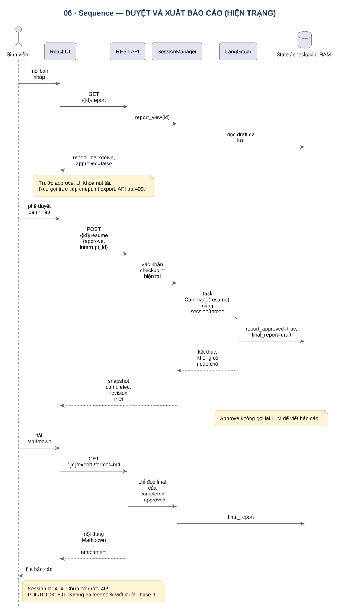


UML trạng thái session
Trạng thái phiên và các lệnh hợp lệ tại từng checkpoint.
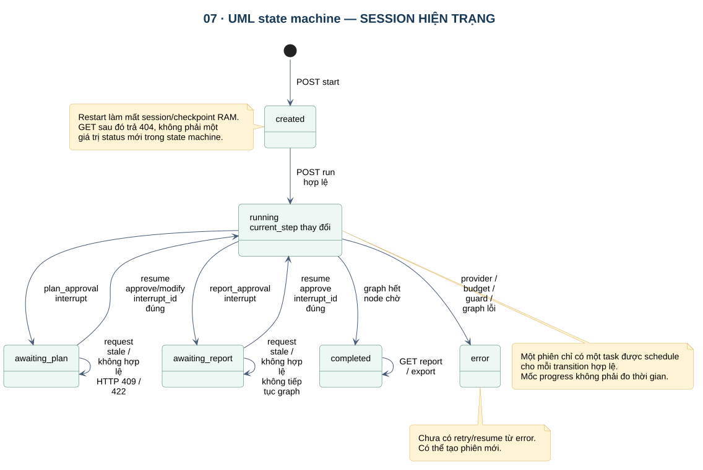


UML lớp và miền logic
Mô hình theo code; chưa phải schema SQL đã triển khai.
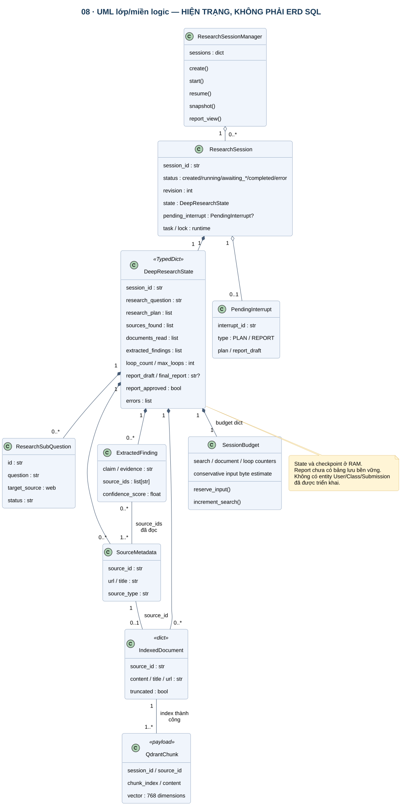


Component và deployment
Các thành phần trong code và cấu hình dịch vụ.
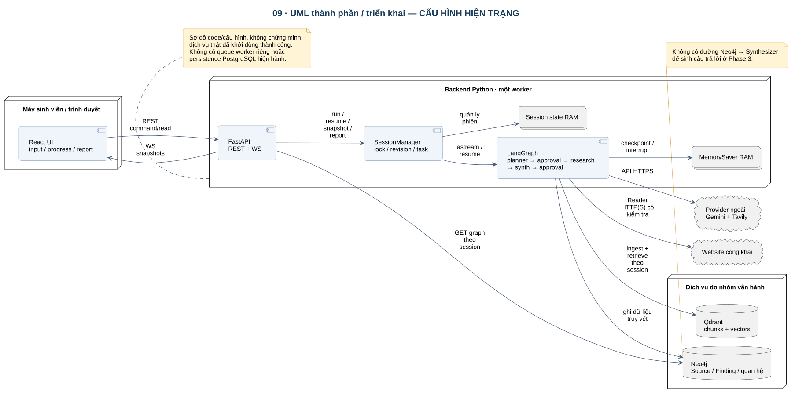


Master plan theo gate
Chốt phạm vi, tích hợp, chuẩn bị đo và benchmark.
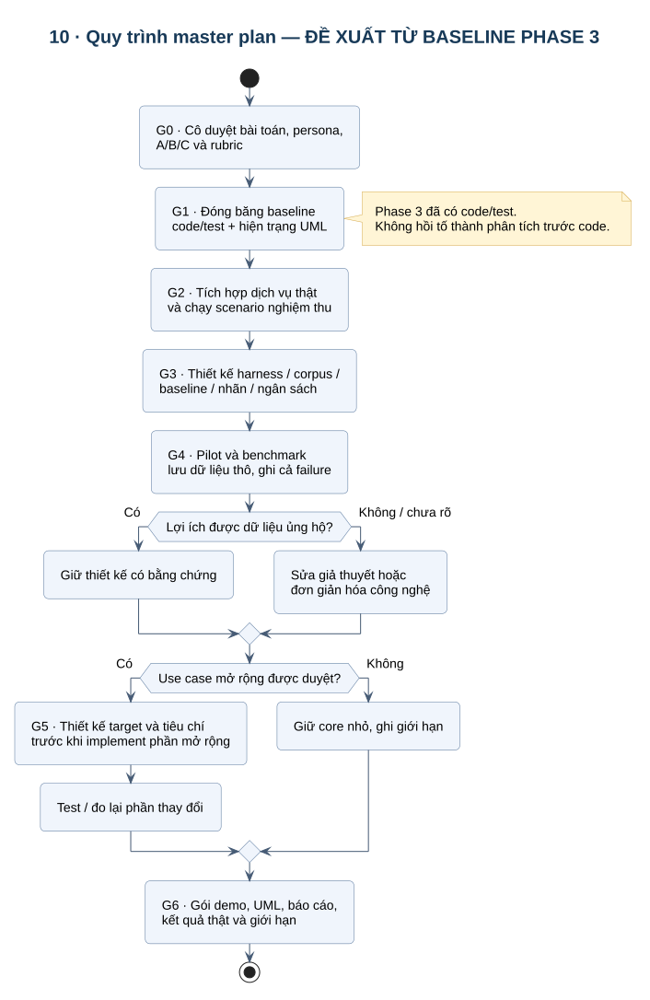


UML use case mở rộng
Lộ trình PDF/URL, phản hồi, graph và persistence.
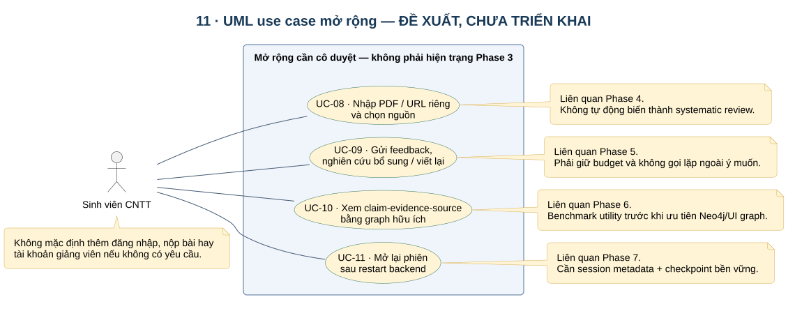


Phase 4: PDF, bài báo và chọn nguồn
Thiết kế bổ sung đã được người dùng cho phép triển khai; xem biên bản Phase 4 để biết kết quả.
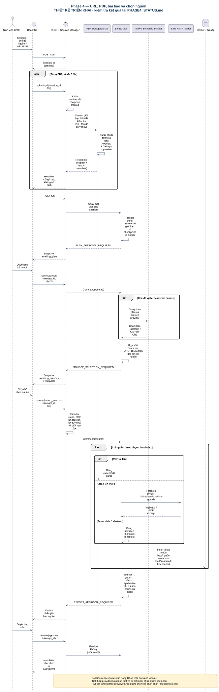